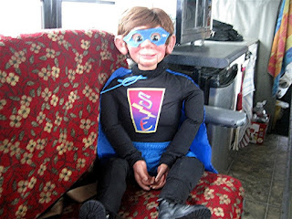

Super Evan
3/28/2012
From Wilson Kindred
I am a Canadian ventriloquist. My wife Sharon, and I travel across Canada doing many different Ministries in churches, schools, prisons, hospitals and nursing homes. These include music, magic, ventriloquism, full Vacation Bible Schools, etc. On the road, we live and travel in a converted school bus. We do everything on a volunteer, donation basis.
Our school presentations have so far have mainly been for high school students (Anti drinking and Driving etc) due to my years of experience as a paramedic.
We are currently embarked on a three month Ministry trip through Newfoundland. A couple of weeks ago, I was contacted by a Pastor who wants me to go into their local public school to do an 'Anti Bullying' presentation, while we are in Newfoundland. I told him that this is certainly not my area of expertise. He said that he understood, but that he really would like me to do this. Perhaps foolishly, I agreed to do the presentation.
I have done much research on the subject of 'Bullying' and have come up with what a appears to be a pretty fare PowerPoint presentation.
{kind=link}

I asked my daughter Amy, to make a 'Super Evan', action hero's outfit for my vent figure, 'Evan Hardwood Kindling'. She did an amazing job. I designed a Super Evan crest on the computer and we printed it on a t-shirt. My Daughter made him a mask and a cape. Of course, he wears tights and shorts. Everything is color coordinated. I think that he looks great!I am working on a skit, in which Evan thinks that he is going to 'take care' of all of the bullies. The skit will show that we cannot use violence or become 'bullies' ourselves to eliminate bullying. However, we can all be heroes, by reporting bullying, supporting the victim, etc... etc.
I have also been asked to do a 'Drug Prevention 'presentationfor the junior students. I was wondering if your readers would have any material that you would be willing to share with me. I want to thank you and your readers for your help with this. Thank you for such a wonderful blog, Mr. D.
Wilson Kindred
Email: wilsonkindred@ontera.net